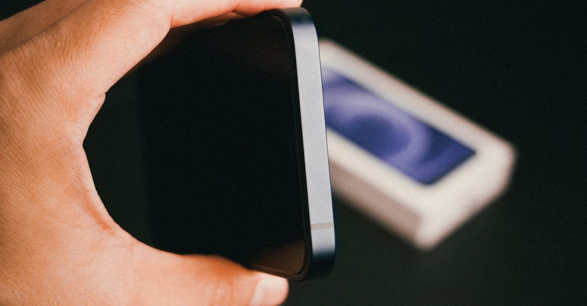

How to Take a Screenshot on Any Phone or Laptop
Every device can take a screenshot with built-in tools — no app needed. Find your device below, press the combination, and look for the flash or thumbnail that confirms it worked.

Android phones
- Press the Power button and Volume Down button together for about a second, then release. The screen flashes and a small preview appears.
- Tap the preview to crop, draw on, or share the screenshot immediately, or find it later in your gallery under a Screenshots album.
- Alternative: on many Android phones, swipe down from the top twice to open Quick Settings and tap "Screenshot" or "Take screenshot". Some brands also support a three-finger swipe down the screen — check under Settings > Gestures if your phone offers it.
iPhone
- Face ID iPhones (no Home button): press the Side button and Volume Up button together, then release quickly.
- iPhones with a Home button: press the Home button and Side (or Top) button together, then release.
- A thumbnail appears in the bottom-left corner. Tap it to edit or share; ignore it and it saves automatically to Photos > Albums > Screenshots.
Windows laptops and PCs
- Whole screen to a file: press Windows key + Print Screen. The screen dims briefly, and the image saves to Pictures > Screenshots.
- Choose part of the screen: press Windows key + Shift + S, then drag to select an area. The snip goes to your clipboard — paste it into a document or chat, or click the notification to save it.
- Snipping Tool: search for "Snipping Tool" in the Start menu for a window with capture modes, a delay timer, and simple annotation.
- Print Screen alone copies the whole screen to the clipboard without saving a file — paste it somewhere to keep it.
Mac
- Whole screen: press Command + Shift + 3. The file appears on your desktop.
- Part of the screen: press Command + Shift + 4, then drag to select. Release to capture.
- One window: press Command + Shift + 4, then press Space — the cursor becomes a camera; click the window you want.
- A thumbnail appears in the corner; click it to edit, or wait and it saves automatically. To change where screenshots save, press Command + Shift + 5 and choose a location under Options.
Chromebook
Press Ctrl + Show Windows (the key that looks like a rectangle with two lines, usually above the number row) for a full screenshot, or Ctrl + Shift + Show Windows to select part of the screen. Screenshots save to the Downloads folder.
Tips that save frustration
- If the button combination doesn't work, you may be pressing too slowly or too briefly — press both buttons at exactly the same time, then release.
- Screenshots of banking apps, streaming videos, or DRM-protected content may come out black — that's the app blocking capture, not a fault with your phone.
- Before sharing a screenshot, check it for private details: phone numbers, addresses, account balances, or personal messages in the background. Crop them out first.
Where your screenshots go
On Android and iPhone, screenshots land in your photos app, usually in a Screenshots album. On Windows, Win + Print Screen saves to Pictures, then Screenshots; region captures from Win + Shift + S go to the clipboard until you paste or save them. On Mac, screenshots save to the desktop unless you change the location with Cmd + Shift + 5. Knowing where they go saves you from taking the same screenshot twice.